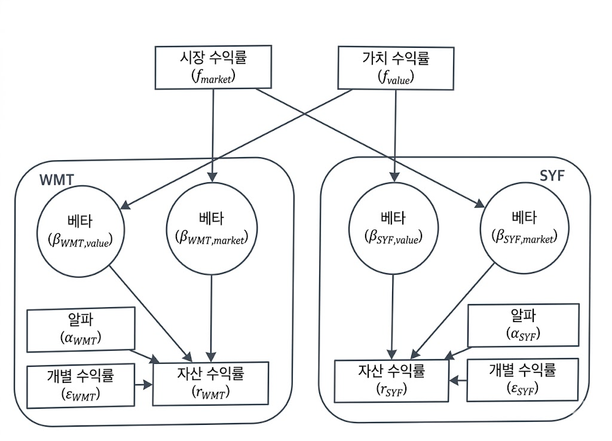

CHAPTER 04
자산 수익률의 근원을 파악하고 리스크를 정교하게 분해하는 현대 퀀트 투자의 핵심
알파가 회귀분석으로 설명될 수 있듯이, 베타 또한 단일 요인에서 다중 요인으로 확장되었습니다. 시장 수익률이라는 단 하나의 팩터(CAPM)를 넘어 자산의 수익률을 결정짓는 다양한 공통 요인을 식별하는 과정입니다.

기존의 CAPM은 시장 베타($\beta^M$)만을 리스크의 척도로 보았으나, 실제 시장은 훨씬 더 복잡한 변수들에 의해 움직입니다.
자산 수익률 $r$은 각 팩터의 민감도와 팩터 수익률의 합으로 정의됩니다.
위 식에서 $\beta$(베타)는 개별 주식이 특정 팩터에 얼마나 민감하게 반응하는지를 나타내며, 이를 '로딩(Loading)' 또는 '익스포저(Exposure)'라고 부릅니다.
Rolf Banz: 소형주가 대형주보다 지속적으로 높은 수익률을 보인다는 소형주 효과를 발견했습니다.
$r = \alpha + \beta^M r^M + \beta^{BMS} r^{BMS} + \epsilon$
1980년대 미 증시 5,000개 종목의 공분산 행렬을 직접 계산하려면 $5000^2 / 2$의 대규모 연산이 필요했습니다. 이는 당시 컴퓨팅 속도로는 상업적 이용이 거의 불가능한 수준이었습니다.
종목 간 상관관계를 직접 구하는 대신, 50개의 공통 팩터로 축소함으로써 연산량을 획기적으로 줄였습니다.
| 접근법 (Approach) | 데이터 요구량 | 성과 (Performance) | 해석력 (Interpretability) |
|---|---|---|---|
| 시계열 (Time-Series) | 중간 | 낮음 | 중간-높음 (거시경제 지표 활용) |
| 펀더멘털 (Fundamental) | 높음 | 높음 | 높음 (주식 고유 특성 직접 식별) |
| 통계적 (Statistical) | 낮음 | 높음 | 낮음 (PCA 등 활용, 해석 난해) |
가장 성과가 좋고 논리적 해석이 가능한 펀더멘털 모델이 현업에서 가장 널리 쓰입니다.
1. 최신 주식 특성 리스트 전처리 및 스케일링
2. 횡단면 선형회귀를 통한 팩터 수익률 도출
3. 공분산 행렬 구성을 통한 미래 변동성 예측
이 결과물인 팩터 모방 포트폴리오(FMP)는 정교한 성과 분석과 리스크 헤징에 필수적입니다.
주식 수익률은 여러 요인의 중첩으로 형성된 결과물입니다.
리스크를 분해하고 통제하여 최적의 비중을 찾는 것
공분산 행렬을 팩터 기여도와 기업 고유 리스크($\Delta$)로 나누어 리스크의 원천을 파악합니다.